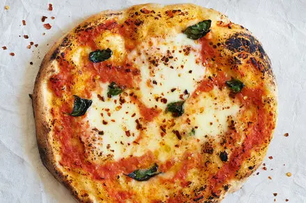
Spread tomato sauce on dough, add cheese and toppings, then bake at 220°C for 10–15 minutes until golden.
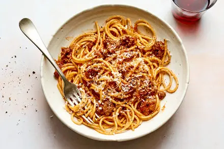
Spaghetti Bolognese is made by boiling spaghetti, cooking minced meat with onion and tomato sauce, then mixing everything together and serving hot.
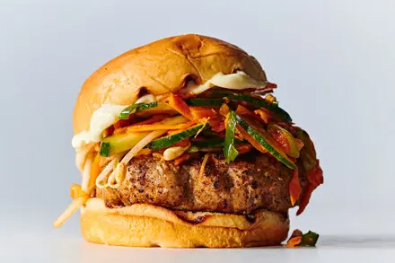
Hamburger is made by grilling a beef patty, then placing it in a bun with lettuce, tomato, cheese, and sauce.
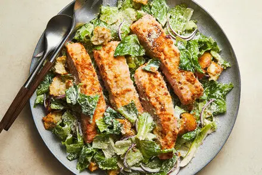
Caesar Salad is made by mixing lettuce with croutons, parmesan cheese, and Caesar dressing.
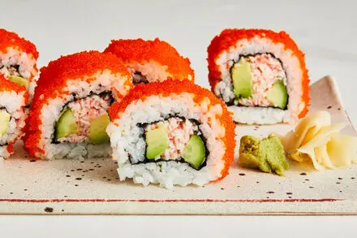
Sushi is made by combining cooked vinegared rice with fish or vegetables, then rolling or shaping it into small bite-sized pieces.
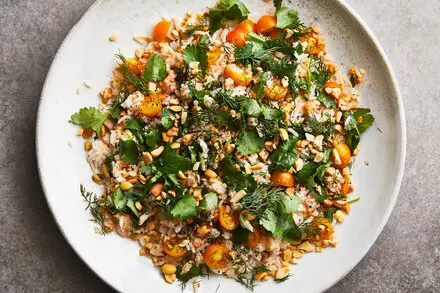
Fried Rice is made by cooking rice, then stir-frying it with vegetables, eggs, and soy sauce in a pan.
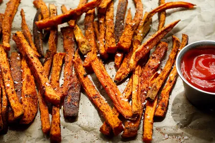
French Fries are made by cutting potatoes into strips, frying them in hot oil until crispy, and adding salt before serving.
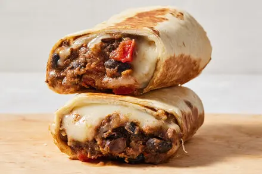
Burrito is made by filling a tortilla with ingredients like rice, beans, meat, cheese, and sauce, then wrapping it tightly and serving it warm.
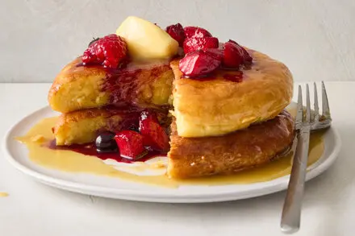
Pancakes are made by mixing flour, eggs, milk, and sugar into a batter, then cooking small portions on a hot pan until both sides are golden.
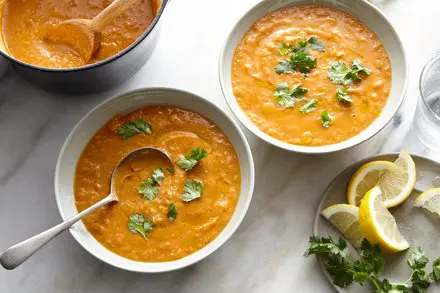
Chicken Soup is made by boiling chicken with water, adding vegetables like carrots and onions, and simmering until everything is soft and flavorful.
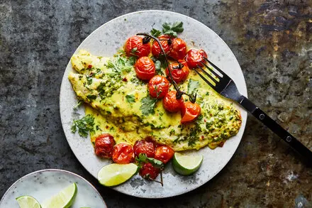
Grilled Fish is made by seasoning the fish with salt, pepper, and spices, then cooking it on a grill or pan until it is fully cooked and lightly crispy on the outside.
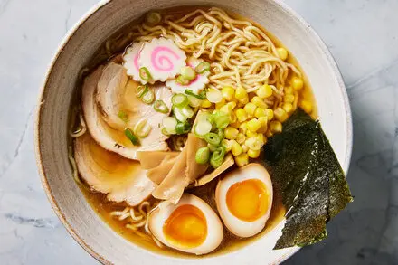
Ramen is made by cooking noodles in hot broth and adding toppings like sliced meat, eggs, vegetables, and seasoning for flavor.
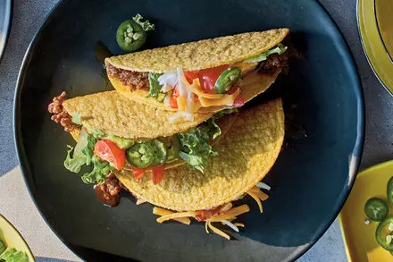
Tacos are made by filling a tortilla with ingredients like meat, cheese, lettuce, and salsa, then folding it and serving it fresh.
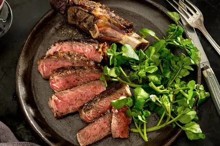
Steak is made by seasoning a piece of beef with salt and pepper, then cooking it in a hot pan or grill until it reaches the desired doneness.
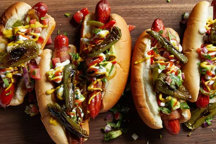
Hot Dog is made by cooking a sausage and placing it inside a bun, then adding toppings like ketchup, mustard, or onions.
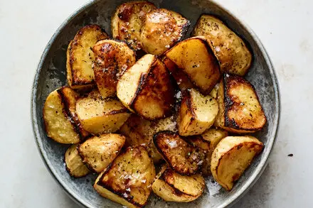
Mashed Potatoes are made by boiling potatoes until soft, then mashing them and mixing with butter, milk, and salt until smooth.
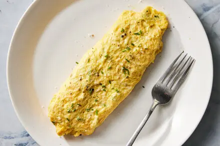
Omelette is made by beating eggs with salt, cooking them in a pan, and adding fillings like cheese or vegetables before folding and serving.
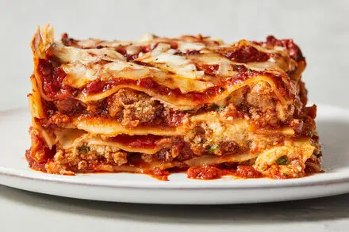
Lasagna is made by layering pasta sheets with meat sauce, cheese, and tomato sauce, then baking it in the oven until hot and melted.
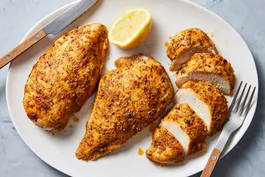
Grilled Chicken is made by seasoning chicken with spices, then cooking it on a grill or pan until it is fully cooked and golden on the outside.
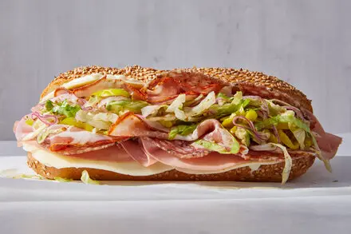
Sandwich is made by placing ingredients like meat, cheese, lettuce, and sauce between two slices of bread and serving it fresh.
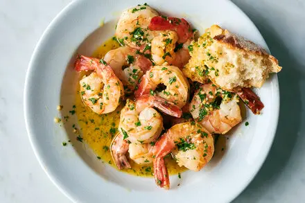
Shrimp Scampi is made by cooking shrimp in a pan with butter, garlic, and a little lemon juice until the shrimp turn pink and tender, then serving it warm.
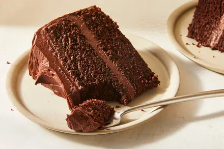
Chocolate Cake is made by mixing flour, sugar, eggs, cocoa powder, and milk into a batter, then baking it in the oven until fully cooked and soft.
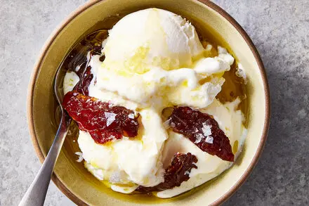
Ice Cream is made by mixing milk, cream, sugar, and flavorings, then freezing the mixture while stirring until it becomes smooth and creamy.
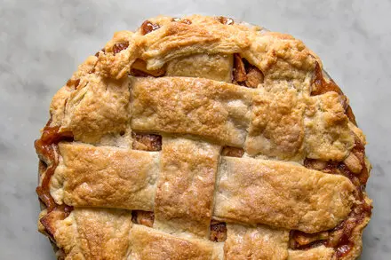
Apple Pie is made by placing sliced apples mixed with sugar and cinnamon into a pastry crust, then baking it in the oven until the crust is golden and the filling is soft.
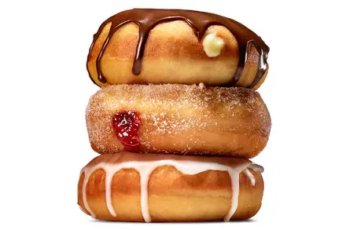
Donuts are made by preparing a sweet dough, shaping it into rings, frying them in hot oil until golden, and optionally adding glaze or sugar on top.
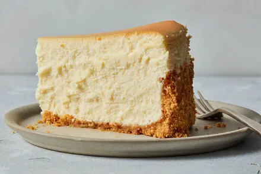
Cheesecake is made by mixing cream cheese, sugar, and eggs, pouring the mixture over a biscuit base, and baking or chilling it until it becomes firm and smooth.
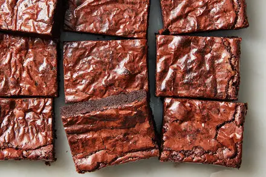
Brownies are made by mixing chocolate, butter, sugar, eggs, and flour into a batter, then baking it until set and fudgy.